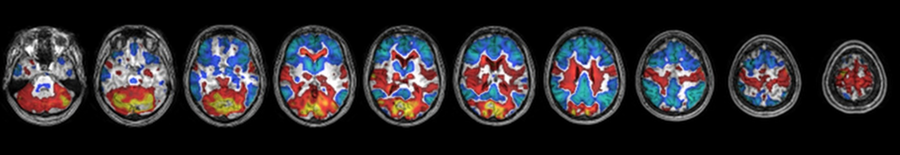
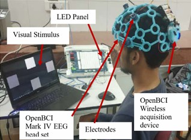
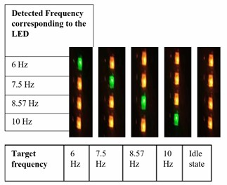
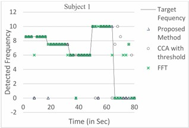

Research
Graduate Research AssistantAug 2020 - May 2021
Dept. of Radiology, Johns Hopkins School of Medicine
Statistical analysis of seizure-induced brain activities using simultaneous EEG & fMRI
- Developed a comprehensive multi-modal data pipeline (EEG-fMRI) to detect and quantify seizure-induced regional changes in Glut1-DS patients, integrating signal processing and image preprocessing for robust analyses.
- Implemented a regression-based framework (GLM) that incorporated fMRI images, seizure features, and physiological regressors to generate activation/deactivation maps, highlighting seizure-induced regions.
- Conducted functional connectivity analyses using ICA and correlation matrices, revealing altered brain network connectivity patterns across default mode, control, motor, and visual networks.
- Demonstrated expertise in end-to-end data handling--from EEG/fMRI artifact removal and feature extraction to advanced statistical modeling & visualization--showcasing deep proficiency in neuroimaging and data science methods for clinical research.

Graduate Research AssistantJul 2017 - May 2019
Indian Institute of Technology (BHU) Varanasi
Brain Computer Interface (BCI) using Machine Learning
- Spearheaded lab setup and experimental design for an SSVEP-based brain computer interface using OpenBCI equipment and custom MATLAB scripts, ensuring reliable data acquisition and artifact reduction.
- Developed and implemented a novel CCA+SVM algorithm that enhanced idle-state detection (96% specificity) and achieved 93% classification accuracy, surpassing conventional FFT and CCA approaches.
- Oversaw full project lifecycle, from hardware configuration and software prototyping to experiment execution, data analysis, and real-time validation on a LED control panel.



Publication
Deep Soni, Nitesh Singh Malan, and Shiru Sharma. "CCA Model with Training Approach to Improve Recognition Rate of SSVEP in Real Time." Proceedings of the 2019 3rd International Conference on Artificial Intelligence and Virtual Reality. 2019. DOI: https://doi.org/10.1145/3348488.3348498